原文连接:https://www.cnblogs.com/HouXinLin/p/11624236.html
前言
Java为我们提供了几种排序得方法,比如Arrays和Collections类,但是前提是数组或者集合中的元素都必须实现Comparable接口，基本的数据类型都已经实现了Comparable接口了，所以我们才能够直接对基本类型的数组或者集合进行排序,比如Float和Integer类得源码.
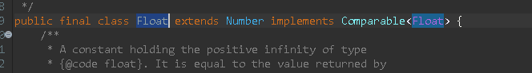
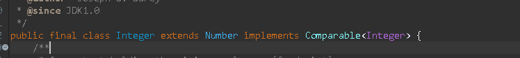
今天记录一下对Comparable得使用和反射得使用.
先看一个Student类
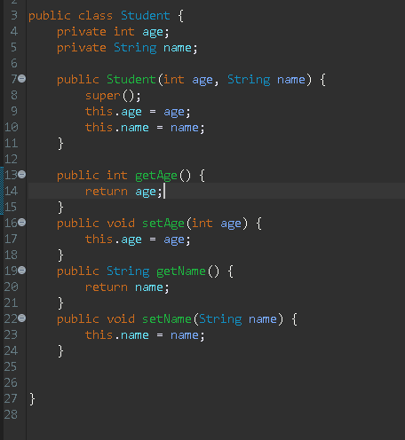
我们要对他进行年龄排序,可以用冒泡进行排序,或者用选择排序法
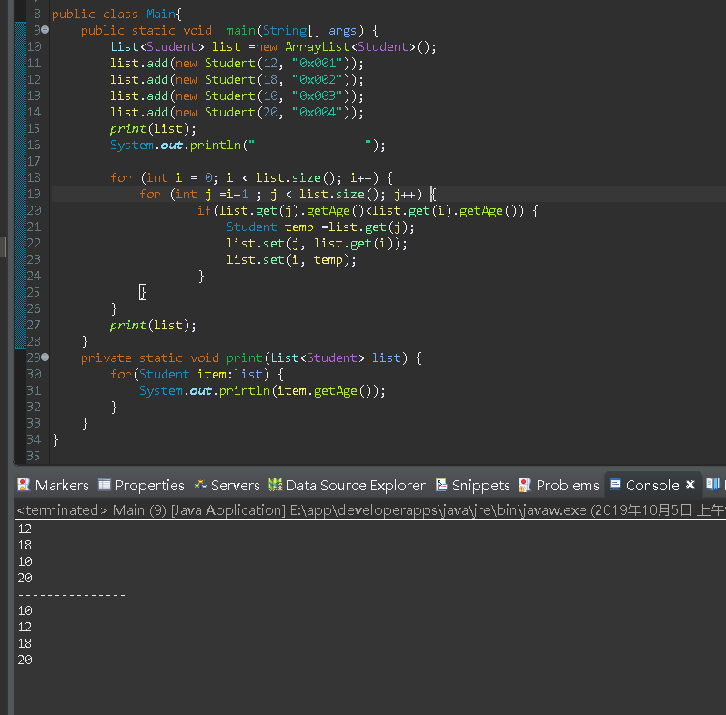
但是这不是主角,
而我们要用Comparable接口进行排序,所以先要实现它.并重写compareTo方法,这个方法才是用来比较对象的,也就是this和传入过来的obj进行比较,返回值代表:
>0 则this>obj,
=0 则this=obj
<0 则this<obj
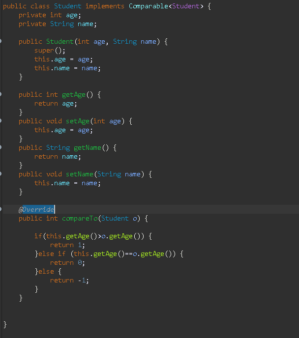
其实我们可以这样简写一下,原理是一样的.
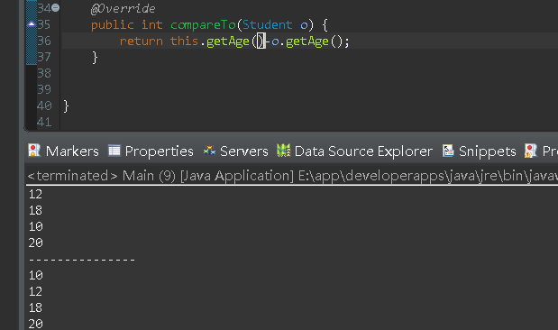
如果想降序呢?直接在前面加一个负号呗
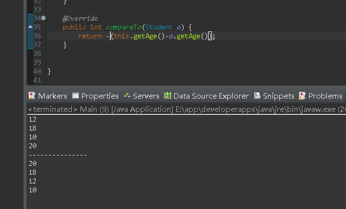
直接调用Collections.sort(list)进行排序,是不是简单多了呢
但是此时,Student多了个字段money,我们要多money进行排序,但是我们又想保留年龄排序方式,那么Comparable就不太合适了
Comparator
我们可以用Collections.sort第二个重载方法,他接收两个参数,第一个是要排序的集合,第二个是Comparator接口.
他和Comparable不同之处在于Comparable对内,而Comparator对外.原理也是一样.
其实Collections.sort的两个重载方法都是调用List的sort方法,但是如果list.sort想传null,则必须要求T(也就是这个类)必须实现了Comparable接口,不然他没办法排序.如果这个类不想实现Comparable接口,那就使用对外接口Comparator.
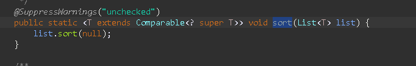
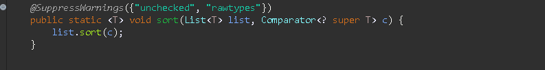
写两个不同字段的排序方法.同样,如果想降序,前面加一个负号就可以
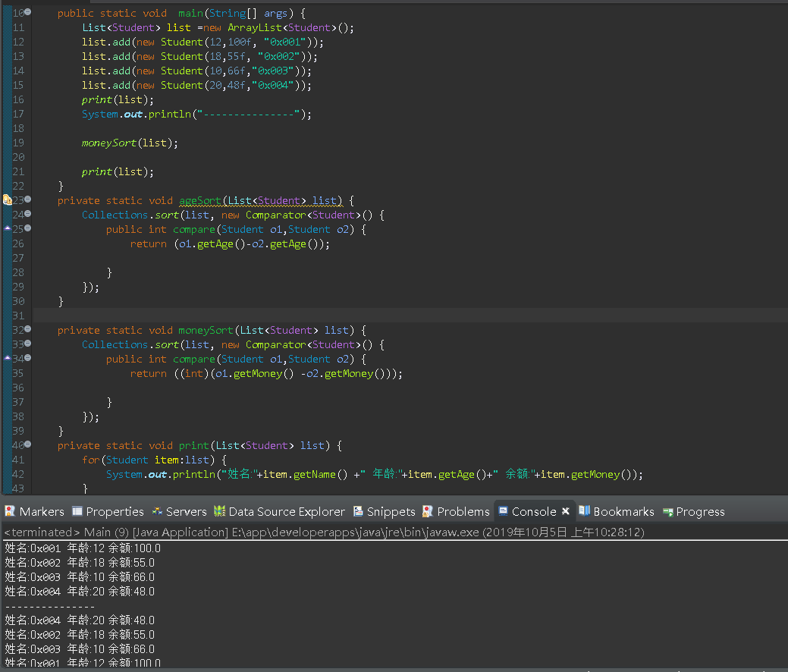
但是!!!
此时又多了一个字段身高height,我们又想对height进行排序,那是不是又要写一个方法呢?显然必须要写,不写怎么排?但是往后越来越多的字段加入,这么做肯定不好.
那要怎么做?
先分析一下,这种方法排序无非就是获取某个字段的值,然后相减返回,那我们可以封装一下,利用反射获取某个类的字段值,先看代码.
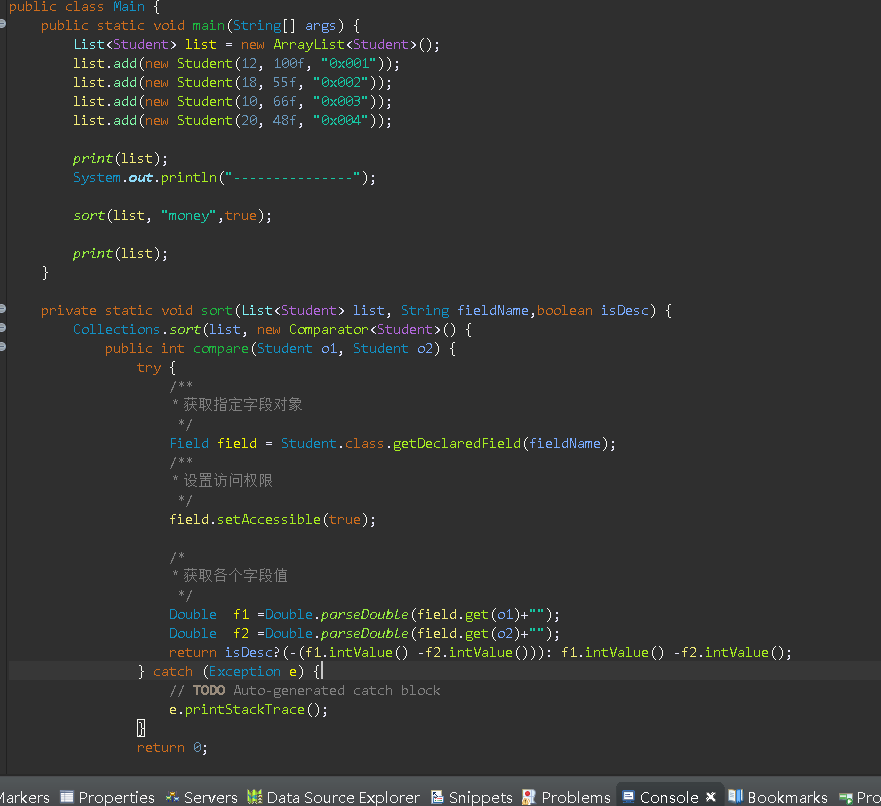
在此,声明了一个sort方法
参数list,代表要排序的集合,
参数fieldName,代表要排序的字段
参数isDesc,是否降序
访问private的字段首先要对field调用setAccessible(true),否则会报错.
因为这个字段可能是不同类型,所以统一先转成Double类型,之后调用intValue方法.
怎么样,是不是很简单了呢?

流年有爱
岁月静好